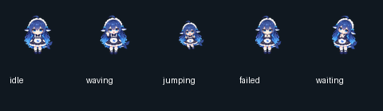

普通版 M5Stack Cardputer 小智固件分享包
原版表情 + DeepSeek 大肥鱼动画｜简体中文｜整理日期：2026-11-13
仅适用于原版 M5Stack Cardputer（不带 ADV）。请先核对机型，再烧录。
这是从 xiaozhi-esp32 主线源码编译的社区分享包，源码版本号为 2.6.0，不是官方发布的 Release 固件。设备持有者已反馈大肥鱼版在一台普通版 Cardputer 上成功运行。
1. 选哪个文件？
首次安装，或不确定机器里原来是什么固件：从下面两个完整固件中选一个，写入地址都为 0x0。
| 文件 | 内容 | 写入地址 |
|---|---|---|
firmware/cardputer-stock-full.bin |
原版小智表情，完整固件 | 0x0 |
firmware/cardputer-deepseek-full.bin |
DeepSeek 大肥鱼动画，完整固件 | 0x0 |
assets/cardputer-stock-assets.bin |
恢复原版表情，仅资源 | 0x600000 |
assets/cardputer-deepseek-assets.bin |
换成大肥鱼动画，仅资源 | 0x600000 |
完整固件已经包含表情资源。正常安装只需烧录一个完整固件文件，无须再写资源文件。 完整烧录会覆盖原程序和配置区域，需要重新配网。
资源文件只用于本分享包内这两版固件之间切换表情；更换资源时不要全片擦除，可保留现有程序和 Wi-Fi 配置。其他版本的分区布局和资源格式可能不同，不保证通用。
大肥鱼版保留中文字体，采用 48×52 像素透明 GIF：待机、挥手、跳跃、失落、等待共五组动作，映射到小智的 21 个情绪名称；不是 21 组独立动画。更换外观不会自动把云端模型切换为 DeepSeek。

解压后可打开 preview 文件夹中的五个 GIF 查看实际动画。
2. 硬件与使用方式
| 项目 | 本包配置 |
|---|---|
| 设备 | 原版 M5Stack Cardputer，非 ADV |
| 芯片 / 存储 | ESP32-S3，8 MB Flash，无 PSRAM |
| 屏幕 | ST7789V2，240×135 |
| 界面 | 简体中文 |
| 对话启动 | BOOT / G0 按钮，或键盘 Enter |
| 唤醒词 | 已关闭，使用按键开始对话 |
| 音频 | 半双工，播放时不能同时录音，不支持语音打断播报 |
原版机器麦克风和扬声器共用部分音频时钟引脚，因此此版本按半双工使用。不要套用 ADV 版的刷机文件或硬件能力说明。
3. 首次安装：用浏览器烧录
准备电脑、USB 数据线、Chrome 或 Edge 浏览器，并先解压分享包。
- 关闭 M5Burner、串口监视器等可能占用设备串口的程序。
- 将 Cardputer 侧面的电源开关拨到 OFF。
- 按住 G0，用 USB 数据线连接电脑，连接后松开 G0，进入下载模式。
- 打开 Espressif 网页烧录工具，点击 Connect，选择 Cardputer 对应的串口。
- 在文件区域选择一个完整固件：原版选
cardputer-stock-full.bin，大肥鱼版选cardputer-deepseek-full.bin。 - 将该文件的写入地址填写为
0x0。检查文件和地址后，点击 Program / Flash 开始烧录。 - 等待完成，复位或重新上电。正常使用时将侧面电源开关拨到 ON。
若工具提供相关 Flash 参数，选择 ESP32-S3 / DIO / 80 MHz / 8 MB。连接不稳定时可降低烧录波特率后重试。
这里使用的是合并固件，已包含引导程序、分区表、OTA 初始数据、应用和资源。不要把其他来源的应用单文件 xiaozhi.bin 当作本包的完整固件写入 0x0。
不需要先把文件导入 M5Burner；按照上面的网页烧录流程即可。
4. 首次联网和激活
- 启动后按屏幕提示进入 Wi-Fi 配置。在配网扫描界面按 W，可用设备键盘输入 Wi-Fi 信息；按 S 可查看已保存的网络。
- 也可以用手机连接设备创建的 Xiaozhi-XXXX 热点，再打开 http://192.168.4.1 完成配网。热点名称以设备实际显示为准。
- 联网后，按设备显示或播报的提示完成小智平台激活、绑定。
- 按 BOOT / G0 或 Enter 开始对话，再按可根据当前状态停止或切换对话状态。
使用 2.4 GHz Wi-Fi。如果手机提示设备热点“无法访问互联网”，配网时仍需保持连接；必要时暂时关闭手机自动切换移动网络的功能。
固件沿用项目默认的小智服务地址 https://api.tenclass.net/xiaozhi/ota/，未预置个人 Wi-Fi 密码或个人账号凭据。在线对话依赖网络和服务端，账号、模型选择及服务政策以平台当时实际情况为准。
5. 常用按键
下表指正常运行状态，配网输入界面以屏幕提示为准。
| 按键 | 功能 |
|---|---|
| BOOT / G0 或 Enter | 开始或切换对话状态 |
; |
增大音量 |
. |
减小音量 |
, |
降低屏幕亮度 |
/ |
提高屏幕亮度 |
| W（配网扫描界面） | 进入键盘配网 |
| S（配网扫描界面） | 查看已保存的 Wi-Fi |
6. 已装本包固件：只换表情
确认当前运行的是本包中的普通版固件，再执行以下步骤。
- 按第 3 节进入下载模式，连接网页烧录工具。
- 想换大肥鱼，选择
assets/cardputer-deepseek-assets.bin；想恢复原版表情，选择assets/cardputer-stock-assets.bin。 - 写入地址填写
0x600000，文件列表中只保留这一个资源文件。 - 不要点击 Erase Flash，不要勾选全片擦除。 直接烧录，完成后重启。
这只更新资源分区，保留现有应用和 Wi-Fi 配置。不确定原有固件来源时，请改用第 3 节的完整固件安装流程。
7. 常见问题
电脑里找不到串口，或连接失败
先换一根确认能传数据的 USB 线，直接连接电脑 USB 口，再按 OFF → 按住 G0 → 插线 → 松开 G0 的顺序重试。确认已关闭 M5Burner 等占用串口的软件；使用 Chrome 或 Edge，并允许网页访问串口。仍无设备时检查系统设备管理器的 USB 识别情况。
烧录完成后黑屏或不能启动
先复位或重新上电，并检查侧面电源开关。再核对是否为普通版、是否选了完整固件、地址是否为 0x0。如果只写了资源文件，原来还必须有本包兼容的应用固件。机型或文件不符时，重新按完整安装流程操作。
为什么喊唤醒词没有反应？为什么播报时听不到我说话？
本包关闭唤醒词，请按 BOOT / G0 或 Enter。音频为半双工，需等播报结束后再说话，不支持边播放边录音及语音打断。
换完资源后仍是旧表情
确认资源文件写入地址是 0x600000，烧录后已经重启。若固件来源不同，可能存在分区或资源格式差异，可改用本包完整固件重新安装并配网。
大肥鱼版是否自带 DeepSeek 模型？
大肥鱼版更换的是设备屏幕动画。云端使用哪个模型，由你连接的服务端及账号设置决定，固件不包含本地运行的大语言模型。
为什么 Wi-Fi 密码需要重新填写？
完整固件烧录会覆盖原配置区域，重新配网属于预期行为。本包两版之间仅更换资源且未全片擦除时，可以保留 Wi-Fi 配置。
升级后能否一直保留大肥鱼？
服务端后续升级或资源更新可能改变表情与兼容性。本包的适配范围是此次构建；升级到其他版本前，请先核对目标版本的普通版机型支持、分区及资源格式。
8. 文件校验与测试范围
整理时已核对两版完整固件与原构建产物的 SHA-256 一致，并确认两份资源与各自完整固件 0x600000 位置的内容逐字节相同。归档压缩包已通过完整性检查。
| 完整固件 | SHA-256 |
|---|---|
| 原版表情 | 2386ae01eeec1e7e019225626bdc28198fe5ccc358ad0155b577bae1e29d7c60 |
| 大肥鱼动画 | 981e305c591e96bb07e96db3b4762f587692ddd969bbc5eb8a5895f54bceb20a |
全包文件校验值见 SHA256SUMS.txt。Windows 可使用 PowerShell 检查，例如：
Get-FileHash -Algorithm SHA256 .\firmware\cardputer-deepseek-full.bin
构建阶段完成编译、链接、容量、镜像布局、资源索引、中文字体保留以及 GIF 解码检查。2026-11-13，设备持有者反馈大肥鱼版已在一台普通版 Cardputer 上成功运行。 这是一次用户实机反馈，不代表所有按键、音频、网络场景及长时间稳定性均已逐项测试，也不是官方认证。
build-info 内的原构建记录保留 hardware_tested: false，表示构建工具当时没有连接实机；后续实机反馈另记在根目录 release-info.json，两者所指的时间和验证主体不同。
9. 源码、构建与署名
- 上游项目：78/xiaozhi-esp32，项目版本号 2.6.0。
- 源码提交：
67ca62d4bb7d91e514d7ccd5e6977745002f41f4。 - 普通版适配：该提交的 m5stack/cardputer。
- 构建环境：ESP-IDF v6.1，Windows x64；SDK 提交
fff9895c82d744c7237be8847347bdd1b07c6643。 - 大肥鱼素材：大肥鱼 / Deepseek Chan，作者 Dullsaw，来自 Codex Pets。
- 原始素材下载：deepseek-chan 资源包。
本次动画适配由原图集拆帧、缩小、转换为透明 GIF 并映射情绪完成。相关配置、转换脚本、构建命令与原始资源校验值见 build-info 文件夹及 构建与素材说明.md。
上游小智代码采用 MIT 许可，原文见 licenses/xiaozhi-esp32-LICENSE.txt；其他依赖保留各自许可。角色美术不因打包而自动适用 MIT：目前未核实到该角色素材明确授予任意再分发或商业使用的许可，分享时请保留作者和来源；涉及商业使用或进一步授权，请向相应权利人确认。完整来源与许可说明见 来源与许可.md。
10. 分享包目录
先看这里-烧录与使用说明.html 浏览器双击阅读版
先看这里-烧录与使用说明.md 可编辑、可发帖的说明原文
分享帖文案.md 可复制的简短分享介绍
firmware/ 两版完整固件，地址 0x0
assets/ 两版表情资源，地址 0x600000
preview/ 大肥鱼动画与预览图
build-info/ 构建记录、依赖版本、配置及转换脚本
licenses/ 上游与本地依赖随附许可文本
构建与素材说明.md 构建命令和素材转换说明
来源与许可.md 来源署名及许可范围
release-info.json 本次整理与用户实机反馈记录
SHA256SUMS.txt 包内文件 SHA-256 校验表